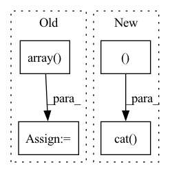

Pattern ID :38494
Before Change
def compute_alphas(self):
// Construct matrix for alpha calculation
objPts_w = np.array( self.objPts) .transpose()[0]
mat_objPts_w = np.concatenate((objPts_w, np.array([np.ones((self.n))])), axis=0)
contPts_w = self.contPts_w.transpose()
mat_contPts_w = np.concatenate((contPts_w, np.array([np.ones((4))])), axis=0)
After Change
objPts = torch.cat((objPts, batched_ones), dim=-1)
// concatenate control points with ones
batched_ones = torch.ones((batch_size, 4, 1), dtype=contPts_w.dtype, device=contPts_w.device)
contPts_w = torch.cat( (contPts_w, batched_ones ), dim=-1)
if linear_least_square:
NotImplementedError("Linear least square method is not implemented yet.")
// Calculate Alpha TODO: CHECK if logic is correct, or change to general methodIn pattern: SUPERPATTERN
Frequency: 4
Non-data size: 4
Instances Fragment ID: 110042570
Project Name: pypose/pypose
Commit Name: f6e65aa4066f56f1715c9ddfd89f5307c1ebe043
Time: 2023-02-24
Author: ztzhan1108@gmail.com
File Name: pypose/module/pnp.py
M Class Name: EPnP
N Class Name: EPnP
M Method Name: compute_alphas(4)
N Method Name: compute_alphas(1)
M Parent Class:
N Parent Class:
M File Name: pypose/module/pnp.py
N File Name: pypose/module/pnp.py
M Start Line: 127
M End Line: 140
N Start Line: 131
N End Line: 158
Before Change
def reprojection_error(self, objPts_w, imgPts, Rt):
P = np.matmul(self.camMat[:, :3], Rt)
objPts_w_ex = np.concatenate((objPts_w.reshape((self.n, 3)), np.array( [np.ones((self.n))]) .T), axis=1)
imgRep = np.matmul(P, objPts_w_ex.T).T
imgRep[:, 0] = imgRep[:, 0] / imgRep[:, 2]After Change
P = torch.bmm(camMat[:, :, :3], Rt)
// concat 1 to the last column of objPts_w
objPts_w_ex = torch.cat( (objPts_w, torch.ones_like(objPts_w[:, :, :1]) ), dim=-1)
// Calculate the image points
imgRep = torch.bmm(P, objPts_w_ex.transpose(dim0=-1, dim1=-2)).transpose(dim0=-1, dim1=-2)
// Normalize the image points Fragment ID: 110042583
Project Name: pypose/pypose
Commit Name: f93c59c3ad352fe90aa3072311a7ca67fa442243
Time: 2023-02-25
Author: zitongz3@illinois.edu
File Name: pypose/module/pnp.py
M Class Name: EPnP
N Class Name: EPnP
M Method Name: reprojection_error(5)
N Method Name: reprojection_error(4)
M Parent Class:
N Parent Class:
M File Name: pypose/module/pnp.py
N File Name: pypose/module/pnp.py
M Start Line: 456
M End Line: 466
N Start Line: 469
N End Line: 492
Before Change
// 计算修正系数 roi和其最大iou的target_box的loc
gt_roi_loc = box2loc(sample_roi, target_box[gt_assignment[keep_index]])
// 这里的减均值除以方差以及非训练阶段roi网络最后出来的roi_loc还要乘方差加均值
gt_roi_loc = ((gt_roi_loc - np.array( loc_normalize_mean, np.float32) ) / np.array(loc_normalize_std, np.float32))
return sample_roi, gt_roi_loc, gt_roi_label
After Change
// neg_index = np.random.choice(neg_index, size=neg_roi_per_this_image, replace=False)
neg_index = neg_index[torch.randperm(neg_num)[:neg_roi_per_this_image]]
// 将正负样本的roi索引合并到一起
keep_index = torch.cat( (pos_index, neg_index )) .squeeze()
// 从所有roi中挑选出正负样本的label
gt_roi_label = gt_roi_label[keep_index]
// 将负样本的label置为0 Fragment ID: 110042565
Project Name: pangkun248/faster-rcnn-pytorch
Commit Name: 811d49713cf13070465c16e51d96db0077647739
Time: 2021-08-26
Author: 39581901+pangkun248@users.noreply.github.com
File Name: utils/creator_tool.py
M Class Name: ProposalTargetCreator
N Class Name: ProposalTargetCreator
M Method Name: __call__(4)
N Method Name: __call__(6)
M Parent Class: object
N Parent Class: object
M File Name: utils/creator_tool.py
N File Name: utils/creator_tool.py
M Start Line: 176
M End Line: 224
N Start Line: 231
N End Line: 281
Before Change
// For single prob prediction it happens, that class_1 is casted into float after 1 - prediction
// Additionally class_1 and class_2 have to be at least shape 1
if not isinstance(class_1, np.ndarray):
class_1 = np.array( class_1) .reshape(1)
class_2 = class_2.reshape(1)
return np.array(list(zip(class_1, class_2)))After Change
class_2 = self.predict(input)
if torch.is_tensor(class_1):
return torch.cat( (class_1, class_2 ), dim=1)
else:
return np.array(list(zip(class_1, class_2))).reshape((-1, 2))
elif self._backend == "tensorflow": Fragment ID: 110042563
Project Name: indyfree/carla
Commit Name: fae929c0e52917dbaaadcbf909801a5eb505114e
Time: 2021-05-06
Author: sbielawski@web.de
File Name: carla/models/catalog/catalog.py
M Class Name: MLModelCatalog
N Class Name: MLModelCatalog
M Method Name: predict_proba(2)
N Method Name: predict_proba(2)
M Parent Class: MLModel
N Parent Class: MLModel
M File Name: carla/models/catalog/catalog.py
N File Name: carla/models/catalog/catalog.py
M Start Line: 219
M End Line: 231
N Start Line: 242
N End Line: 251